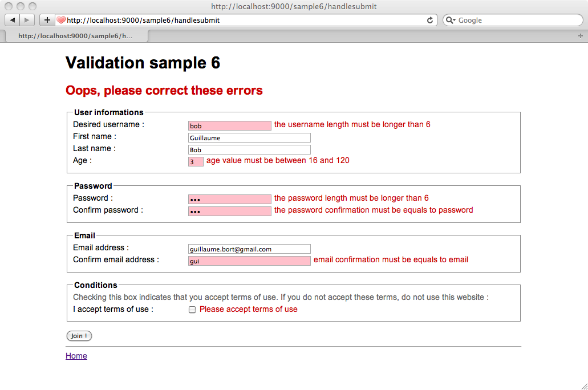

Sample applications
Play comes with the following set of sample applications in the samples-and-test/ directory, in the framework installation path. We use them to run our automated test suite, and you can take a look at them to discover typical Play usages.
Yet Another Blog Engine
The final application from the Play guide tutorial.
Zencontact
A simple contact management application.
Booking
A port of the well known ‘booking’ application from the JBoss seam framework.
Forum
A simple forum application that uses JPA.
Jobboard
A fully-featured job board application that uses the CRUD module to automatically generate the administration area.
Chat
An HTTP-based chat application. It uses the asynchronous request model to be able to handle a lot of simultaneous connected users without wasting resources.
Validation
Demonstrates the different ways to create a form with validation support.
